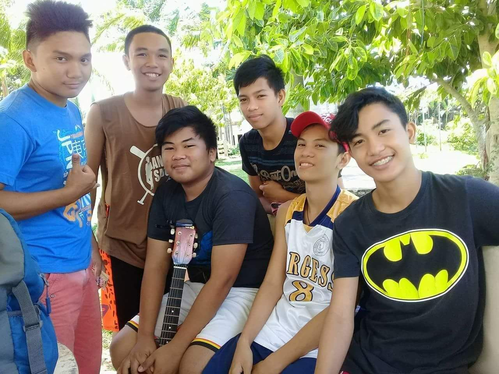
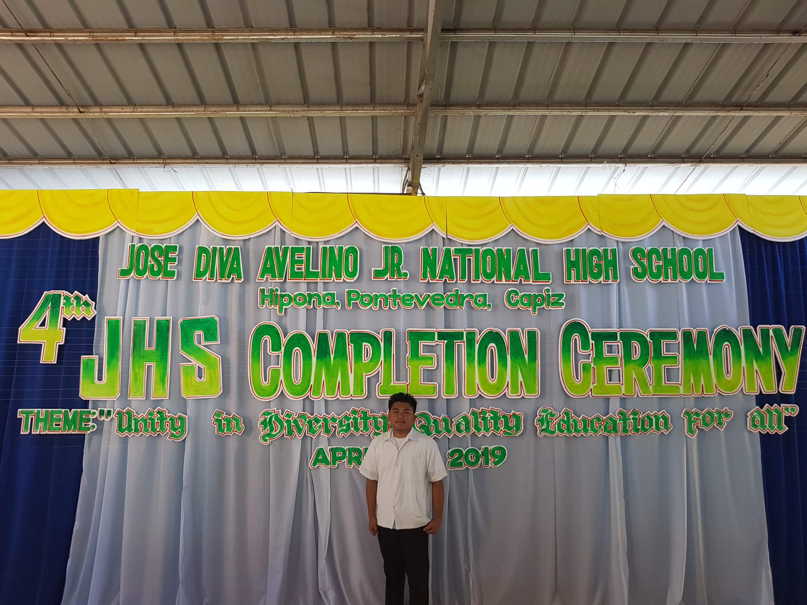

After graduating elementary I entered Jose Diva Avelino Jr. National High School (JDAJNHS) formerly known as Hipona National High School (HNHS). I enrolled at Science, Technology, and Engineering (STE) class. During my JHS days I only the same classmate throughout my high school journey this is when I meet my long time friends but everyone of us in the class became friends in the long run.
Our class is like an Avenger for me like we are combined with different interest and hobbies making it easier for us to get closer with each other. For some instance when we need to draw for an output since some of my classmates were good at it, they tend to help other. It’s very pleasant to be around with this people as you know there’s always a helping hand you can lend.
Also, during this time our section always dominate every activity in our school when we are doing performance task and joining competitions. Here are some of those this was when were at tenth grade this was a cheer dancing performance task where we compete with other section in the same grade level and guess what we got the first place.
We were in the ninth grade this time we entered a Zumba competition we also able to bag the first place here. We are very lucky to have a lot of talented classmates who lead us to achieve these goals. We also won a mural painting in the same year yet I couldn’t found any picture of it online it’s too embarrassing to brag yet since I lead that I will do so and this is my website though so I set the rules.
The friends I gain from my freshmen years became my long-term friends we share secrets and problems to each other. Like other circle of friends, we always go out and do some road trips, sleep overs, and other different gimmicks. They made my Junior High School joyful that gave a lot of memories to reminisce when I grow up. All of this cause us to bond even more, they became my second family which I treasure for the rest of my life.
This wrapped up my Junior High School. They said that your high school life is one of the best and memorable phases of our life it is undeniable indeed for me. I bagged my Junior High School achieving With Honors under Science, Technology, and Engineering Class.
